Ниткошвейное скрепление (КШС)
Переплет КШС (клеевое швейное скрепление) — это проверенное временем решение, которое сочетает сшивание страниц нитками и их последующее склеивание.

Такой подход обеспечивает исключительную прочность и долговечность, что делает его идеальным для книг, рассчитанных на частое использование — от учебников до каталогов. Типография «ПК КЕМ» предлагает полный спектр услуг по созданию книг с переплетом КШС: мягкие обложки для массовых тиражей, твердые переплеты 7БЦ для солидных изданий и 7Б для эксклюзивных проектов.
Почему переплет КШС — это ваш лучший выбор?
Переплет КШС выделяется своей долговечностью: сшитые нитками страницы выдерживают до 5000 открытий без выпадения, а склеивание корешка добавляет устойчивости даже при толщине блока свыше 400 страниц. По сравнению с КБС (клеевым бесшвейным скреплением), КШС увеличивает срок службы книги на 30–40%, что подтверждено тестами издательских ассоциаций. Стоимость может быть на 10–15% выше, но это окупается: вы экономите на переиздании и повышаете репутацию качеством продукции.
Книги с переплетом 7БЦ с КШС: солидность и практичность
Переплет 7БЦ с КШС — это сочетание элегантности и надежности. Внутренний блок сшивается нитками толщиной 0,5 мм, корешок укрепляется марлей плотностью 80 г/м², а сверху и снизу добавляется каптал из хлопка или полиэстера, защищающий края от истирания на 50% дольше обычного.
Обложка изготавливается из картона толщиной 2–3 мм, обтянутого ламинированной бумагой с УФ-лаком плотностью 25 микрон, что предотвращает выцветание и царапины до 5 лет эксплуатации.
Внутренние стороны обложки должны соединяться с блоком форзацами. Вы можете выбрать для форзацев дизайнерскую бумагу, они также могут быть запечатаны. Внутренний блок специалист прошивает нитью, чтобы повысить прочность изделия и продлить его срок «жизни».
Этот переплет идеален для корпоративных отчетов, научных трудов или подарочных изданий.
Твердый переплет 7Б с КШС: роскошь в каждой детали
Твердый переплет 7Б с КШС — это выбор для эксклюзивных изданий с акцентом на дизайн. Мы используем материалы премиум-класса: бумвинил с текстурой под кожу, балакрон с водоотталкивающим слоем, эфалин, а также натуральную кожу или ткань с возможностью окраски в более чем 50 оттенков.
Твердый переплет 7Б имеет отличия от 7БЦ, поскольку для первого специалисты имеют возможность использовать методы УФ-ламинирования, конгрева, тиснения и другие. Такие различия порой служат единственной причиной выбора именно переплета 7Б.
Сшитый блок выдерживает нагрузку до 15 кг на разрыв, а отделка сохраняет видимость деталей даже через 15 лет. Этот переплет подходит для юбилейных книг или коллекционных изданий.
Мягкая обложка с КШС: практичность и доступность
Мягкий переплет с КШС идеален для изданий, которые часто используют. Книга раскрывается на 180 градусов без риска разрыва, что удобно для рабочих тетрадей или руководств.
Для изготовления книги в мягкой обложке, сначала выбирается основной материал из следующих
- картон;
- бумага плотность до 300 г/м2;
- дизайнерская бумага.
После того, как отпечатывают обложку и блок, специалисты производят шитье блока на ниткошвейной машине. Такой способ сшивания тетрадок давно зарекомендовал себя и происходит следующим образом: блок делят на тетради (по 8, 12, 24 или 32 страницы), тетрадь сшивают капроновыми нитками, соединяют со следующей тетрадью, и со следующей, пока не будет закончен весь блок. Далее специалист занимается склейкой блока, используя специальную клеевую машину и биговку обложки «на открытие».
Обычный срок для офсетной печати - от 10 дней. Тиражи - от 300 экземпляров и больше. Цена за экземпляр будет значительно ниже при большом тираже.
Русские былины
- Формат изделия: 210х277 мм
- Красочность: 4+4
- Кол-во страниц: 268
- Обложка: Синтетический материал на бумажной основе
- Печать блока: 4+4
- Скрепление: Ниткошвейное + клей
- Тиснение: Золотое
- Золочение блока
Н.И. Пирогов. Вопросы жизни. Дневник старого врача
- Формат изделия: 205х260 мм
- Бумага: Тонированная
- Кол-во страниц: 192
- Корешок: Скругленный
- Обложка: Переплетный материал на полиуретановой основе (Италии)
- Переплет: Французский (корешок с бинтами)
- Тиснение: блинтовое + золотая фольга
Национальное величие
- Формат изделия: 213х305 мм
- Бумага: Galerie Art
- Кол-во страниц: 340
- Корешок: прямой
- Обложка: Переплетный материал на полиуретановой основе (Италия)
- Скрепление: Клеевое швейное
- Прямой корешок с бинтами ( выпуклые поперечные элементы - французский переплет )
- Золочение обреза
Павел Рыженко. Любимая Россия. Живопись
- Формат изделия: 245х285 мм
- Бумага: мелованная 170 г/м
- Кол-во страниц: 112
- Обложка: Эфалин
- Тиснение: белая +золотая фольга
- Панорамные страницы с одним сгибом
Большая международная энциклопедия. Лучшие люди
- Формат изделия: 325х215мм
- Бумага: Мелованная, офсетная
- Кол-во страниц: 1032
- Обложка: Переплетный материал на бумажной основе
- Переплет: 7Б
- Печать блока: 4+4, 1+1
- Тиснение: Золотая фольга
- Каптал, ляссе
Технические требования подготовки к печати с КШС
Для печати с КШС важно подготовить макет с учетом строгих требований. Количество страниц должно быть кратно 8, 12, 24 или 32, чтобы тетради сшивались без пустых листов. Внутренние поля — не менее 15 мм для прошивки, а толщина блока влияет на корешок: 100 листов 80 г/м² дают около 10 мм. Мы проверяем файлы перед запуском и консультируем бесплатно. Вот основные параметры
| Параметр | Требование | Примечание |
|---|---|---|
| Формат файла | PDF, TIFF, EPS | Вылеты 3–5 мм |
| Разрешение | 300 dpi | Для текста и изображений |
| Цветовая модель | CMYK | RGB не принимается |
| Поля | Внешние — 10 мм, внутренние — 15–20 мм | Учитывайте корешок |
| Толщина блока | До 50 мм (≈500 листов 80 г/м²) | Влияет на ширину корешка |
| Страницы | Кратно 8, 12, 24 или 32 | Для тетрадей |
| Бумага для блока | Офсетная, 60–120 г/м² | Гладкая или матовая |
| Обложка | Картон 200–300 г/м² или бумага до 300 г/м² | Возможна ламинация |
Например, для книги формата А5 с 240 страницами корешок составит около 24 мм, что нужно учесть в дизайне.
Как мы создаем переплет КШС?
Процесс КШС начинается с печати блока на офсетных машинах с точностью наложения цвета до 0,1 мм. Блок делят на тетради и сшивают нитками с прочностью 10 кг на разрыв — для тиража 500 штук это занимает 1,5 часа. Корешок склеивается клеем с адгезией до 20 лет, а обложка бигуется с точностью до 0,5 мм. Для твердых переплетов добавляются марля (80 г/м²), каптал шириной 10 мм и форзацы, что увеличивает срок на 2 дня. Чтобы исключить брак, мы тестируем экземпляры на прочность.
Для каких проектов подходит переплет КШС?
Переплет КШС подходит для продукции с высокой нагрузкой. Он идеален для учебников (выдерживают до 3 учебных лет), справочников (служат до 10 лет в офисах), каталогов (актуальны на выставках 2–3 сезона) и художественной литературы (подарочные издания хранятся десятилетиями). Вот популярные варианты
- Учебники и рабочие тетради
- Корпоративные каталоги с полноцветной печатью
- Книги в твердом переплете для библиотек
Мы адаптируем КШС под ваши задачи, предлагая тиражи с доставкой по России.
Переплет КШС — это гарантия прочности и стиля для любых изданий. В нашей типографии мы предлагаем мягкие обложки для экономичных тиражей и твердые переплеты 7БЦ и 7Б для премиум-проектов. Мы предоставляем образцы материалов, тестовую печать и расчет стоимости в течение 24 часов. Мы печатаем книги, которые будут служить долго и выглядеть великолепно.
Материалы и образцы
Французский переплёт 
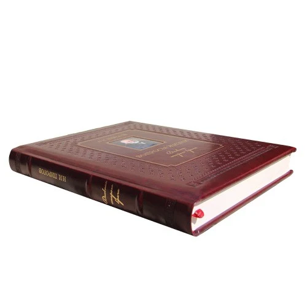
Французский переплёт
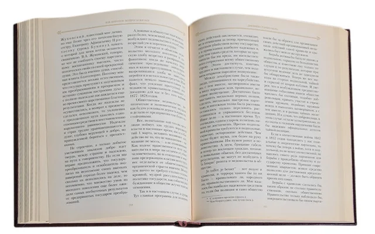
Французский переплёт
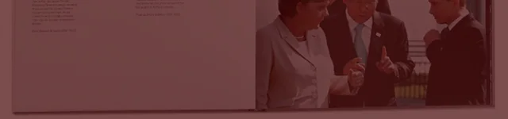
Ниткошвейное скрепление (КШС)
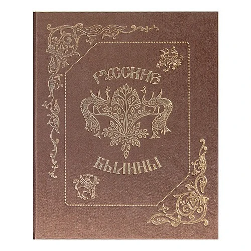
Ниткошвейное скрепление (КШС)
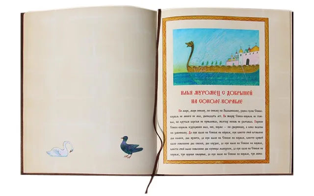
Ниткошвейное скрепление (КШС)
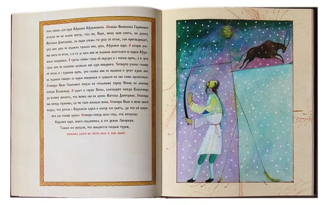
Ниткошвейное скрепление (КШС)
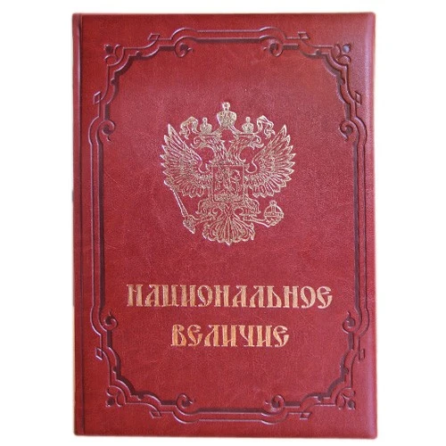
Ниткошвейное скрепление (КШС)
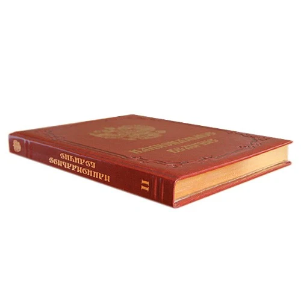
Ниткошвейное скрепление (КШС)
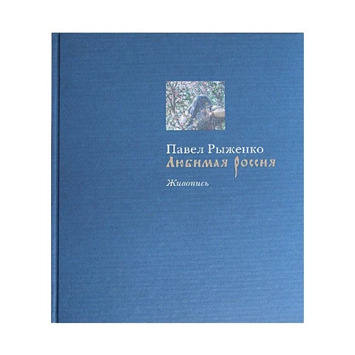
Ниткошвейное скрепление (КШС)
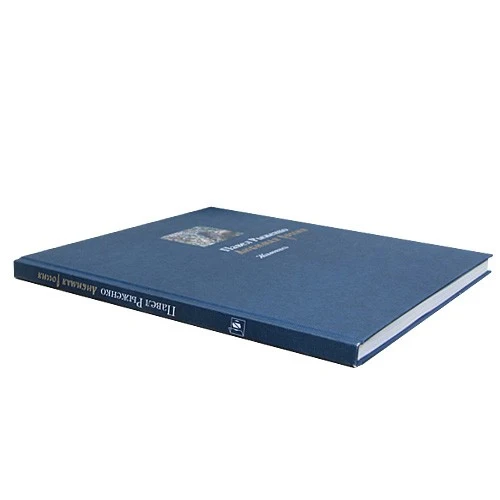
Ниткошвейное скрепление (КШС)
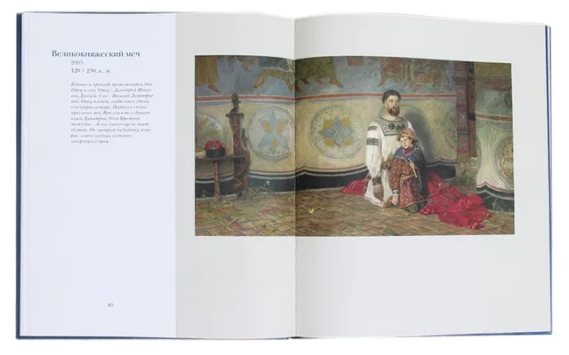
Ниткошвейное скрепление (КШС)
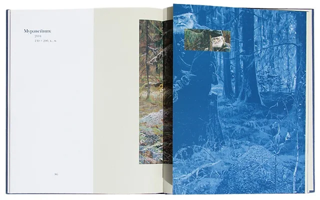
Ниткошвейное скрепление (КШС)
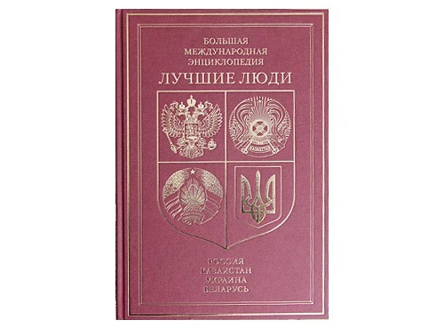
Ниткошвейное скрепление (КШС)
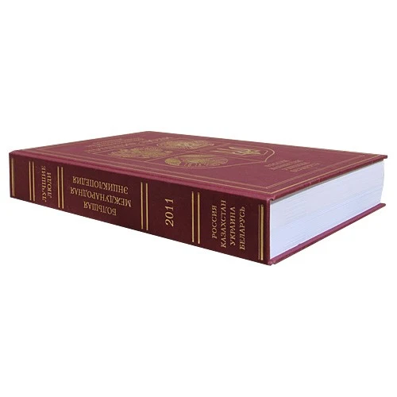
Ниткошвейное скрепление (КШС)
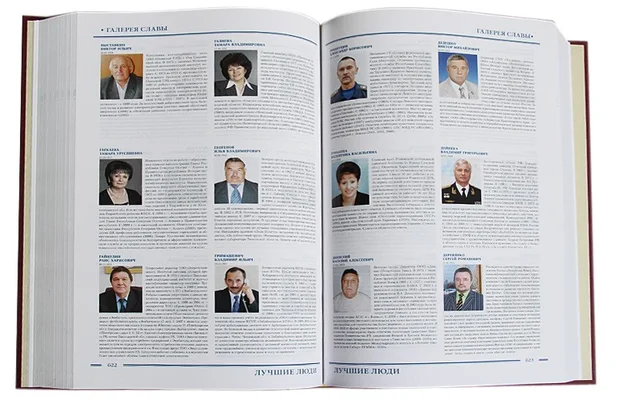
Ниткошвейное скрепление (КШС)
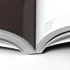
Мягкий с ШКС